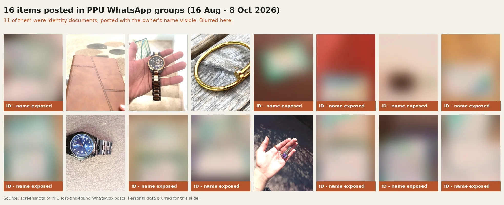

اليوم، الأغراض اللي بتنلاقى بالجامعة بتنصوّر وبتنزل على مجموعات الواتساب.
Today, items found on campus are photographed and posted in WhatsApp groups.
11 / 16
من الأغراض المنشورة كانت هويات وبطاقات جامعية، وكلها اسم صاحبها ظاهر للمئات. of posted items were ID cards, every one showing the owner's name to hundreds of people.

منشورات حقيقية من مجموعات الواتساب، آب إلى تشرين الأول 2026. البيانات الشخصية مموّهة. · Real posts, Aug to Oct 2026, personal data blurred.
🔓 الخصوصية · Privacyأرقام هويات وتواريخ ميلاد وصور بتنتشر للعموم. ID numbers, birth dates and faces shared publicly.
🔍 البحث · Searchما في طريقة تبحث، بس تمرّر وتتمنى. No way to search: you scroll and hope.
❓ التحقق · Verificationأي حدا بيقدر يدّعي إنه الغرض إلو. Anyone can claim any item.
كيف بيشتغل
How it works
📸 الأمن بصوّر الغرضوالذكاء الاصطناعي بيعرف شو هو ولونه لحاله.
Security snaps a photo. The AI recognises what it is.
✍️ إنت بتوصفه بكلامكبالعربي، حتى باللهجة الفلسطينية، أو بالإنجليزي. النظام بيرتّب أقرب النتائج، وبنبّهك إذا وصل غرضك بعدين.
You describe it in your own words, even in Palestinian dialect. It ranks the closest matches and alerts you if your item turns up later.
🛡️ الهويات محميةالنظام بيكتشف الهويات لحاله وما بيعرض صورتها لحدا. صاحبها بثبت إنها إلو قبل ما يستلمها.
ID cards are detected automatically and never shown. The owner proves it's theirs before pickup.
جرّبناه على صور حقيقية
Tested on real photos from our university
10/10
هويات اكتشفها النظام تلقائياً
ID cards auto-detected, 0 false alarms
6/6
أوصاف لقت الغرض الصح أول نتيجة
English descriptions found the right item first
<0.1s
لكل صورة، على لابتوب عادي
per photo, on a normal laptop, offline
لمين
Who it's for
نبدأ بجامعة بوليتكنك فلسطين، وبعدها أي مكان فيه ناس كتير بتضيّع أغراضها.
Starting at Palestine Polytechnic University, then anywhere crowds lose things.
🎓 جامعة بوليتكنك فلسطين · PPU🏫 جامعات · Universities🛍️ مولات · Malls🏥 مستشفيات · Hospitals🏨 فنادق · Hotels
الفريق
The team · Computer Science, Palestine Polytechnic University